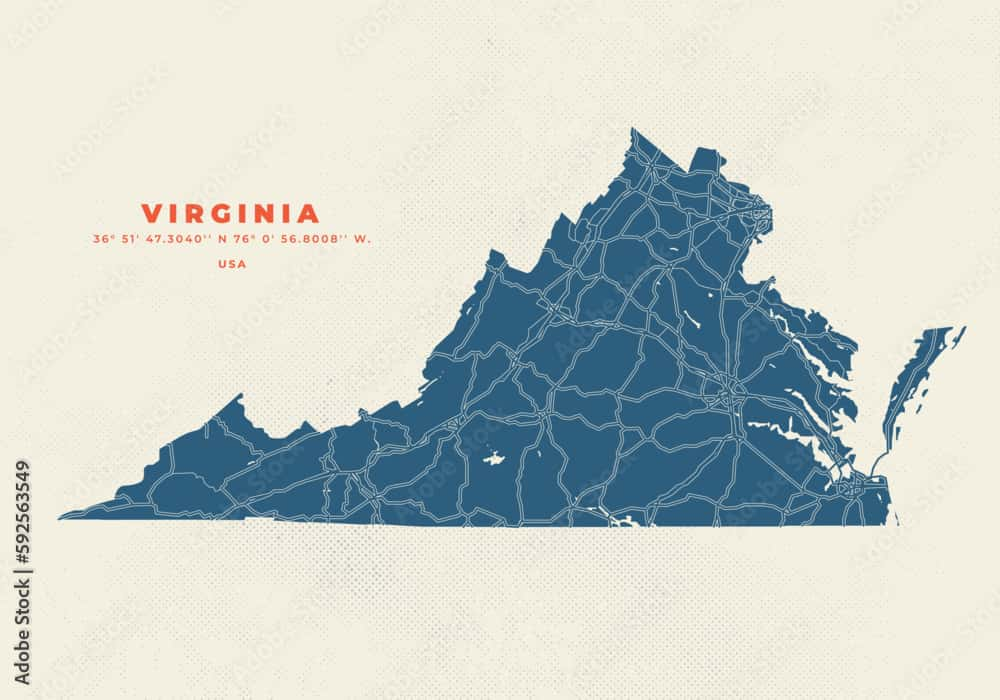

Christopher Jones
About Me
Hi! I'm Chris. I live in Virginia and enjoy playing video games and reading. I got into coding because I wanted to learn to create my own video games, but these classes have opened my mind to a lot more things that involve coding. Take web designing for example! I am looking forward to learning more about coding!
Virginia, USA
 I enjoy living in Virginia. It's a nice state with many historical places. Our state tree is the Dogwood and our state bird is the Cardinal. I hope Virginia seems like a nice place to you, too!